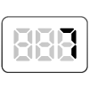
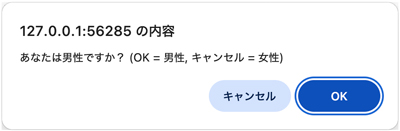

【007】確認結果をダイアログに表示

- プロンプト例
JavaScriptで確認結果をダイアログに表示
confirm() とは？
- 「window.confirm()」はブラウザーへ任意のメッセージ付きのダイアログを表示し、ユーザーがダイアログを承認またはキャンセルするまで待機します
- 一般的には「window.」は、省略されます
confirm('メッセージ');
→ 「OK / キャンセル」付きの確認ダイアログを表示し、
押された結果を true / false で返す関数です。
戻り値の仕組み
const result = confirm('削除しますか？'); console.log(result);
| 押したボタン | 戻り値 |
|---|---|
| OK | true |
| キャンセル | false |
問題
- 男女を確認するダイアログを表示
const result = confirm('あなたは男性ですか？（OK = 男性、キャンセル = 女性)'); console.log(result);

基本的な使い方
if (confirm('削除しますか？')) { alert('削除しました'); } else { alert('キャンセルされました'); }
変数に入れて処理する（おすすめ）
const isOK = confirm('送信しますか？'); if (isOK === true) { console.log('OK'); } else { console.log('キャンセル'); }
※ if (isOK) でもOKですが、明示的に書くと可読性が上がります。
フォーム送信前の確認（超よく使う）
<form onsubmit="return confirm('送信してよろしいですか？');"> <button type="submit">送信</button> </form>
仕組み
- OK → true → 送信される
- キャンセル → false → 送信中止
削除ボタンでの利用（定番）
<button onclick="return confirm('本当に削除しますか？');"> 削除 </button>
confirm() の注意点
❌ デザイン変更不可
- ブラウザ標準UIのため 色・大きさ・デザインは変更不可
❌ 非同期処理不可
- 処理が 完全に停止 する（ブロッキング）
⚠ モバイルでは表示が異なる
- iOS / Android で見た目が変わる